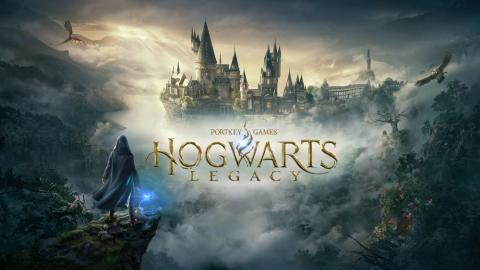
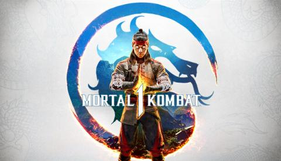
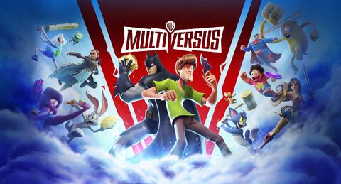
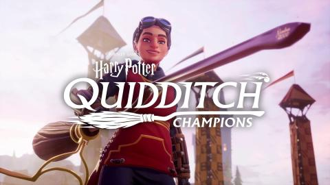
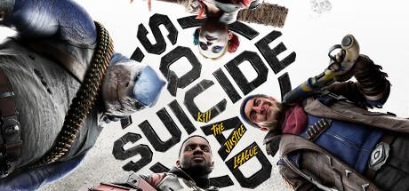
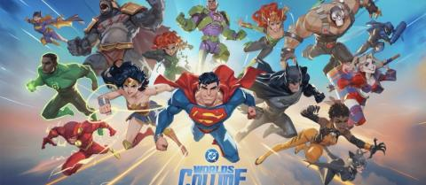

Tevin Sukhai
Community Manager | Operations | Leadership
Building stronger teams, improving experiences, and creating meaningful connections through leadership and collaboration.
Credited In

Hogwarts Legacy
Community Operations · Player Experience · QA Support

Mortal Kombat 1
Community Operations · Player Feedback · Engagement

MultiVersus
Community Operations · Player Experience

Harry Potter: Quidditch Champions
Community & Social Operations

Suicide Squad: Kill The Justice League
Community Operations · Engagement Support

DC Worlds Collide
Community Operations · Ambassador Program Support
About Me
Howdy! I’m Tevin. I’m a community-focused leader who enjoys bringing people together, building strong teams, and creating environments where people feel valued. Throughout my career, I’ve worked across gaming, digital communities, and team operations — helping organizations improve communication, develop processes, and create better experiences for the people they serve. I’m passionate about leadership, collaboration, and finding new ways to make an impact.
Professional Experience
Warner Bros. Discovery
Associate Manager, Community @ WB Games (PC & Console)
Mar 2023 — Nov 2025 · Remote
Supported community and social functions across multiple Warner Bros. Games titles.
- Led a 40+ member moderation and safety team across communities totaling 477,000+ members.
- Managed community operations, player feedback, sentiment analysis, and escalation handling.
- Developed workflows and processes to improve moderation and communication operations.
- Supported QA initiatives and player experience improvements across AAA titles.
- Trained creators, moderators, and community staff on guidelines and best practices.
- Supported ambassador programs and community engagement initiatives.
Starstream Studios
Chief Marketing Officer
Jul 2021 — Sep 2023 · Contract · Remote
- Led project operations for Space Industry Simulator, overseeing development, QA, and team coordination.
- Managed recruitment efforts, freelancer coordination, and team growth.
- Developed marketing and engagement strategies to increase visibility.
- Managed social platforms and community communication.
- Supported budgeting and operational planning.
Infinite Canvas
Community Lead
Aug 2021 — Sep 2022 · Remote
- Managed community operations across multiple game projects.
- Led moderators, administrators, and community staff teams.
- Created engagement strategies supporting communities with 30,000+ members and 1B+ visits.
- Built QA processes and feedback systems to improve releases.
- Worked with production teams to align community needs with development goals.
Skills
Let's Connect
Open to opportunities focused on leadership, operations, community, and building meaningful experiences.
hi@tevinn.com